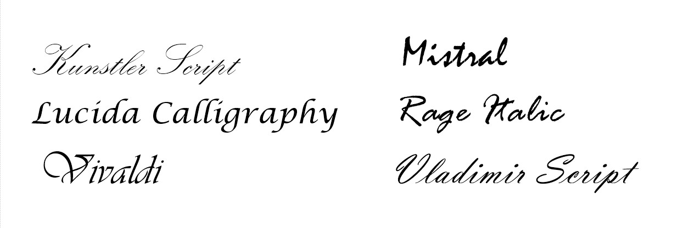
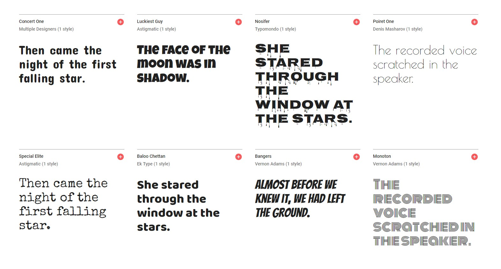
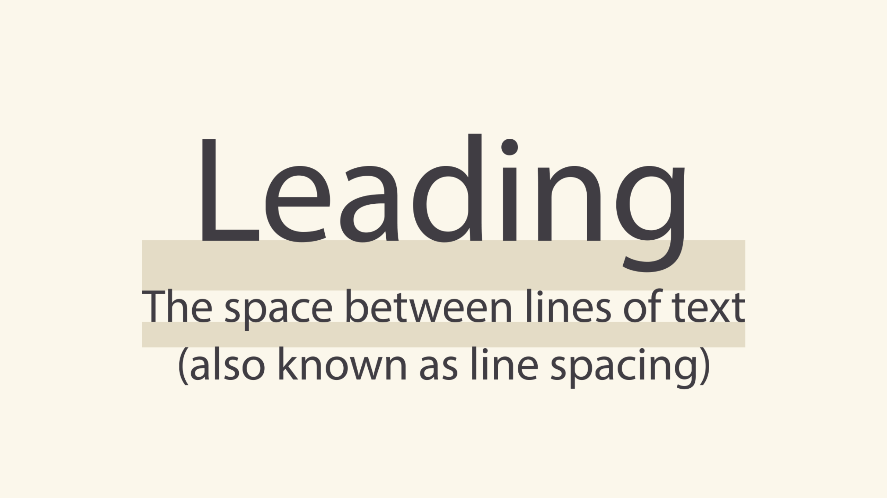
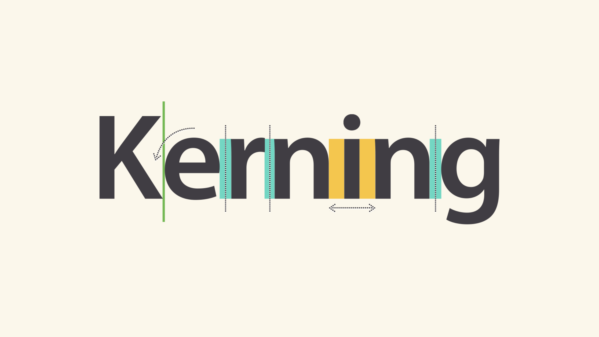

What is Typography?
Typography is the style or appearance of text. How one arranges letters and manipulate space to present a visually attractive and readable text.
Four main types of fonts
Serif fonts
This is the oldest font type. Serif fonts have little strokes called serifs attached to the main part of the letter. Because of their classic look, they're a good choice for more traditional projects. They're also common in print publications, like magazines and newspapers.
Sans serif fonts
As minimalism became more popular, the need for simpler and cleaner fonts appeared, and sans serif fonts entered the scene. Sans serif fonts don't have that extra stroke—hence the name, which is French for without serif. This style tends to be easier to read on computer screens, including smartphones and tablets.

Script fonts
As their name suggests, the aim of these fonts is to resemble handwriting. Because of the fact they are extremely ornate, they have very limited use in web design. You won’t see them used for body text. They have found their use in really short phrases, most often titles. You can find them for example on logos, liquor bottles, beauty brand logos and packages, posters, etc.
Display fonts
Display fonts, also known as decorative fonts, are the most diverse group of fonts. Because of their decorative nature, display fonts are best for small amounts of text, like titles and headers and more graphic-heavy designs. their appearance varies: there are highly decorative ones (Monoton), there are minimalist ones (Poiret One), Bangers looks very comic-esque, and Special Elite is a typewriter font.
Choosing a font
When choosing a font it is important to think about what you want to portray. Fonts can come across as casual, neutral, exotic or graphic. So it’s important to choose a font that fits the criteria. For instance, if you’re portraying a mood of nostalgia, you might consider picking serif over sans serif.
Styles come and go. Good design is a language, not a style
-- Massimo Vignelli (Designer) --
Combining fonts
When deciding which fonts to use, less is more. It's best to limit yourself to one or two per project, never more than three. You can always play with sizes, weight and style of the font.
Don't be afraid to combine font styles that are different but complementary, like sans serif with serif, short with tall, or decorative with simple. Google Fonts for example offers a selection of popular pairings of a chosen font.
Other important terms
Hierarchy
Hierarchy is used to guide the reader's eye to whatever is most important. In other words, it shows them where to begin and where to go next using different levels of emphasis with colour, size, contrast and alignment.
Establishing hierarchy is simple: Just decide which elements you want the reader to notice first, then make them stand out. High-level items are usually larger, bolder, or different in some way. Remember to keep it simple and stick to just a few complementary styles.
White Space
White space, or negative space, is just as important. This is any space that is not covered by text or images and can include padding, margins, and line spacing.
An attempt to cram in as much information as possible into an artwork results in a cluttered and unappealing piece. This might result in the audience’s loss of interest or decrease in attention span because of the tediousness of its readability.
Leading
Leading is the space between lines of text, also known as line spacing.
If you're not sure how much line spacing to use, don't fret—the default is usually fine. The goal is to make your text as comfortable to read as possible. Too much or too little spacing can make things unpleasant for the reader.
Tracking
Tracking is the overall space between characters, sometimes called character spacing. Most programs let you condense or expand this depending on your needs.
In some designs, you might adjust your tracking to create a certain artistic effect. It can also help you fix fonts that are poorly spaced to begin with.
Kerning
Kerning is the space between specific characters. Unlike tracking, it varies over the course of the word because each letter fits together differently.
Some fonts have what we call bad kerning, making certain letters look improperly spaced. If a font you're using has bad kerning, it's best to cut your losses and choose something else.
